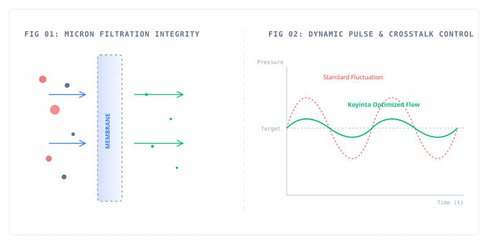

How much does a single hour of unexpected downtime cost your plant?
In high-volume industrial packaging and corrugated printing, the answer isn't just the price of a replacement part. It's missed shipping deadlines, wasted substrates, and idling labor. It easily adds up to thousands of dollars.
When a printhead clogs, deflects, or suffers from chronic crosstalk, the immediate reaction is often to blame the printhead itself.
But after a decade of evaluating fluid dynamics and supply chain vulnerabilities in industrial digital printing, I've observed a recurring reality: 80% of chronic printhead failures are actually ink delivery and filtration failures in disguise.
Here is the micro-level truth that standard procurement often overlooks:
1. Chemical Compatibility vs. "Invisible Dissolution"
Aggressive UV-curable, solvent-based, or highly alkaline pigment inks don't just flow through a system; they actively challenge it. If a filter housing or capsule membrane has even a 1% structural incompatibility, the ink will slowly leach out micro-extractables. You won't see it in the tank, but those microscopic particles are the exact size required to permanently brick a premium industrial printhead.
2. The Myth of the "Universal Filter"
In a high-load printing loop, pressure fluctuations are the enemy of consistency. A generic filter might hold the correct micron rating on paper, but under continuous dynamic pulses, standard membranes deform. This deformation creates "bypass leaks"—allowing sediment aggregates to slip through and disrupt meniscus pressure at the nozzle plate.
3. Crosstalk is a Fluid Management Issue
When printheads suffer from erratic ink firing or drop-size inconsistencies, it's rarely a mechanical defect. More often, it's a failure in sub-micron filtration integrity failing to control fluid sedimentation and micro-bubbles, leading to acoustic crosstalk within the ink chambers.

The Takeaway for Sourcing Managers & Engineers:
Stop treating filters and fluid components as simple "commodity consumables."
True cost efficiency isn't found in saving $5 on a cheap generic capsule. It is found in securing application-specific fluid configurations tailored to your exact ink chemistry and operational pressure profiles.
If you want to protect your printhead lifecycle, you must first protect the integrity of the fluid that feeds it.